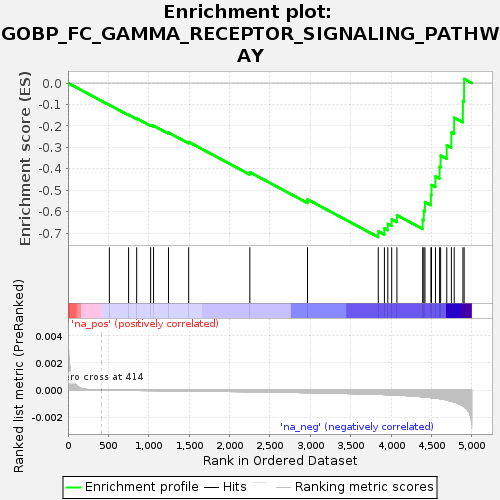
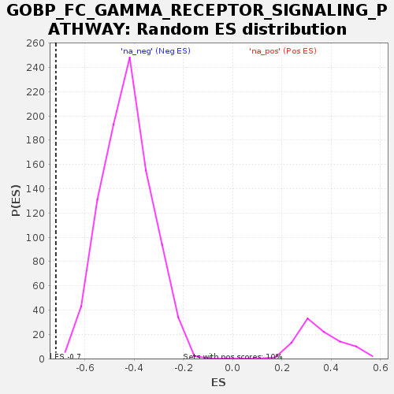

| Dataset | GEP4_vs_GEP6_residuals |
| Phenotype | NoPhenotypeAvailable |
| Upregulated in class | na_neg |
| GeneSet | GOBP_FC_GAMMA_RECEPTOR_SIGNALING_PATHWAY |
| Enrichment Score (ES) | -0.7183411 |
| Normalized Enrichment Score (NES) | -1.6679285 |
| Nominal p-value | 0.0 |
| FDR q-value | 0.070342235 |
| FWER p-Value | 0.491 |

| SYMBOL | RANK IN GENE LIST | RANK METRIC SCORE | RUNNING ES | CORE ENRICHMENT | |
|---|---|---|---|---|---|
| 1 | CLEC4E | 512 | -0.000 | -0.1024 | No |
| 2 | FCGR3B | 750 | -0.000 | -0.1480 | No |
| 3 | CLEC4D | 850 | -0.000 | -0.1651 | No |
| 4 | IFNG | 1023 | -0.000 | -0.1960 | No |
| 5 | PLPP4 | 1059 | -0.000 | -0.1991 | No |
| 6 | CD33 | 1244 | -0.000 | -0.2311 | No |
| 7 | FCGR3A | 1494 | -0.000 | -0.2747 | No |
| 8 | NOS2 | 2251 | -0.000 | -0.4158 | No |
| 9 | FCER1G | 2965 | -0.000 | -0.5424 | No |
| 10 | CD247 | 3841 | -0.000 | -0.6911 | Yes |
| 11 | HCK | 3917 | -0.000 | -0.6776 | Yes |
| 12 | PLD2 | 3959 | -0.000 | -0.6565 | Yes |
| 13 | APPL2 | 4007 | -0.000 | -0.6353 | Yes |
| 14 | PRKCD | 4072 | -0.000 | -0.6162 | Yes |
| 15 | PRKCE | 4391 | -0.001 | -0.6371 | Yes |
| 16 | LCK | 4405 | -0.001 | -0.5962 | Yes |
| 17 | FCGR2A | 4419 | -0.001 | -0.5549 | Yes |
| 18 | PLA2G6 | 4493 | -0.001 | -0.5219 | Yes |
| 19 | FYN | 4500 | -0.001 | -0.4752 | Yes |
| 20 | VAV3 | 4549 | -0.001 | -0.4348 | Yes |
| 21 | VAV2 | 4600 | -0.001 | -0.3909 | Yes |
| 22 | FCGR2B | 4613 | -0.001 | -0.3382 | Yes |
| 23 | FGR | 4689 | -0.001 | -0.2902 | Yes |
| 24 | VAV1 | 4746 | -0.001 | -0.2304 | Yes |
| 25 | LYN | 4781 | -0.001 | -0.1614 | Yes |
| 26 | MYO1G | 4889 | -0.001 | -0.0834 | Yes |
| 27 | FCER2 | 4904 | -0.001 | 0.0191 | Yes |
